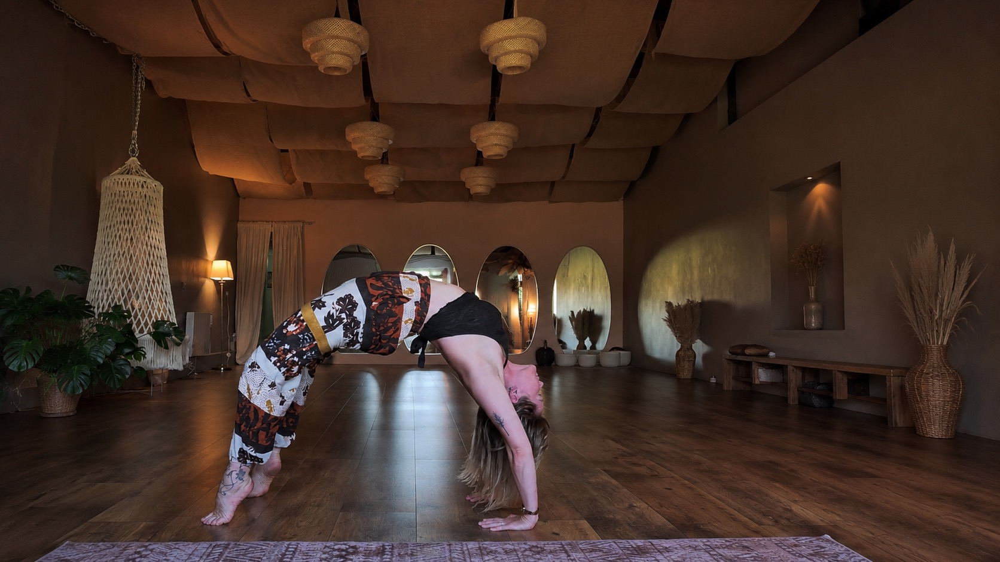

Yoga With Ginni + Moon & Lotus Studio: Classes | Workshops | Retreats
Moon & Lotus Studio | Yoga with Ginni Boutique Yoga Studio | Dunhill, Co. Waterford Welcome to Moon & Lotus Studio, a warm and welcoming boutique yoga and wellness space on the beautiful Copper Coast. Whether you're completely new to yoga or have years of experience, you'll find supportive classes, inspiring workshops, immersive retreats and seasonal wellness events designed to help you move, breathe and feel your best. Our year-round offerings include: Weekly yoga classes for all levels Beginners Yoga Courses Vinyasa Flow, Hatha, Yin, Restorative & Yogalates Breathwork & meditation Pilates with Chloe Full Moon yoga, cacao & crystal bowl sound bath evenings Yoga workshops and specialist masterclasses Day retreats and European wellness retreats* Corporate and private yoga sessions At Moon & Lotus, we believe yoga is for everybody. Our classes focus on improving strength, flexibility, mobility, balance and relaxation while creating a welcoming community where everyone feels at home. Located in Dunhill Eco Park, Co. Waterford (X91 FVF9), with easy parking and a peaceful setting surrounded by nature. Join us now!
View on Google Maps →